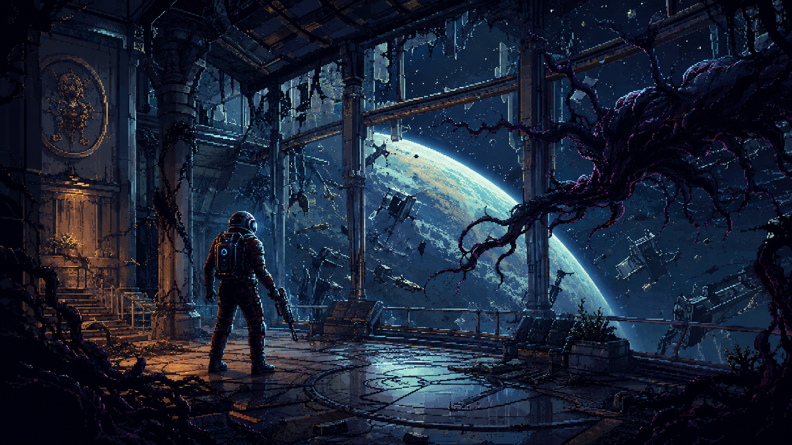
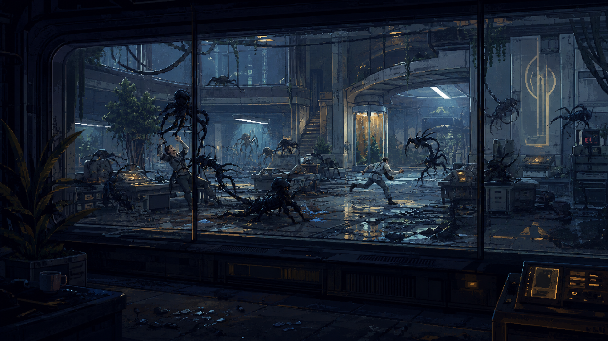

01 / Cover
Session 01 Field Journal
This is the simple play diary version. No final verdict yet. Just what happened, what worked, what felt suspicious, and which scenes deserve an image.

Morgan wakes up into a corporate morning that is too clean to be trusted. That is the useful shape of the first page: normal day, expensive routine, tiny unease, then the first crack.
02 / Fake Morning
The Commute Is Too Clean
The opening works because it lets the player obey a normal routine before revealing that the routine was a set.
First Day on the Job starts as plain roleplay: emails, uniform, hallway, elevator. It is mundane in the right way. The game needs that baseline, because later the whole thing folds back on itself.
The PC setup mostly holds on ultra, but the long Please wait while textures are loading pause goes into the technical caveat column. I also tried forcing a 4K-style oversample, but the image overflowed the screen, so native resolution stays the sane choice.
The hallway detail helps more than a tutorial prompt would. Patricia Varma is fixing a panel; a water-pressure sign explains why she is there. Small maintenance details make the fake world feel staffed before the reveal.
The rooftop ride is showy, but usefully showy. Studio credits become city signage, the helicopter route sells the fantasy, and the whole commute feels like an expensive lie waiting for a seam to open.
03 / Test Rooms
The Room Starts Watching Back
The test sequence is not interesting because the tasks are deep. It works because the observers keep reacting like the simplest answers are wrong.
Alex tells Morgan to act naturally. Bellamy keeps the lab calm. Then the rooms ask for very basic things: move boxes, hide, press buttons, answer an inkblot and trolley-style moral prompt.
On paper, none of that is impressive. In practice, the off-screen dissatisfaction is the point. The game is not teaching me a control scheme as much as it is measuring a person and refusing to explain the criteria.
Then a cup becomes a threat, the researcher goes down, and the opening finally names the core horror clearly: ordinary objects can lie. That is the first real review hook.

Current ruling: promising, still unscored. The opening has a strong authored trick, but the real review has not started until Talos I becomes a place I can navigate, test, break, and understand.
04 / Art Queue
What We Need Next
Missing images stay listed here until exact filenames exist. The journal pages should read cleanly even when only one or two strong images are ready.
Drop generated 16:9 PNGs into the Prey image folder, keep the names exact, then rebuild. The page auto-wires matching files into the journal.
prey-page-02-a-rooftop-helicopter.pngprey-page-03-a-mimic-paranoia.pngprey-page-03-b-crew-terminal-trace.png
npm run build:metronpm run qa:prey-assets
The style rule is now simple: no decorative dashboard, no extra boxes, no fake UI. Write the run like a review diary and drop in a strong image only when the scene needs one.